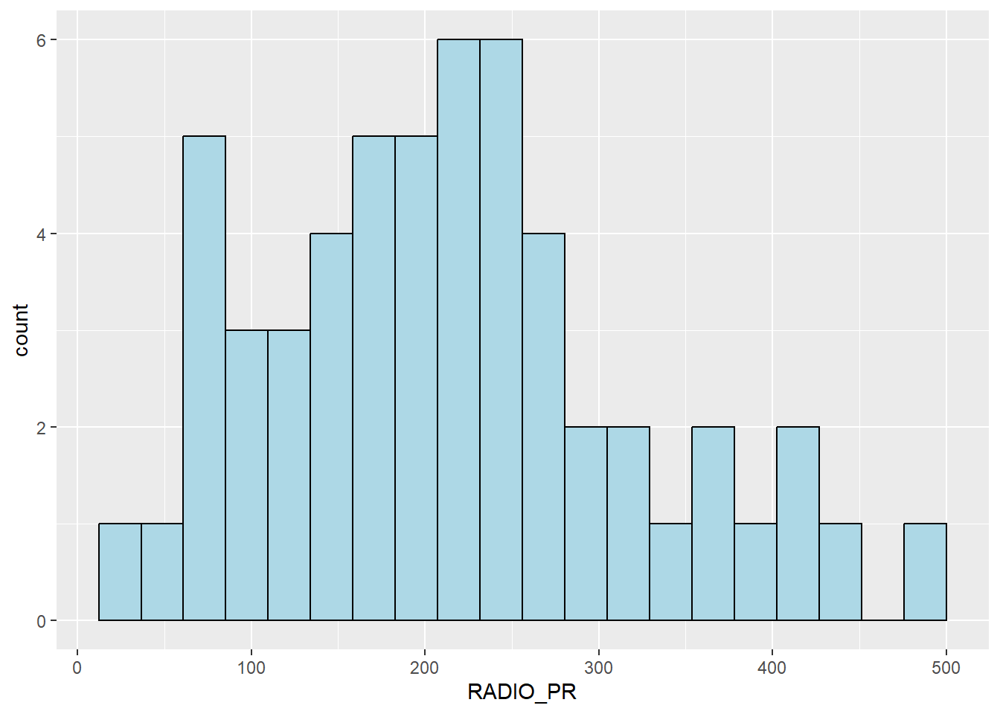
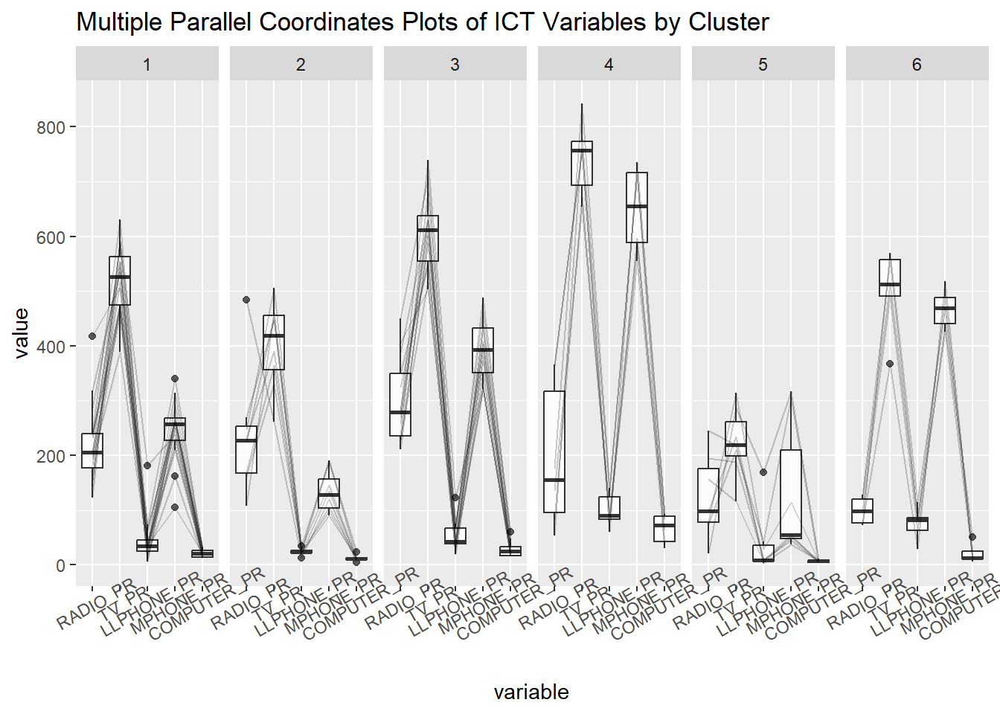

pacman::p_load(sp,spdep, tmap, sf, ClustGeo,
ggpubr, cluster, factoextra, NbClust,
heatmaply, corrplot, psych, tidyverse, GGally)In-class Exercise 7
Loading R packagess
- GDAL is no longer in use, thus replaced with sp
Importing data
Using filter dplyr function to select Shan state data,
shan_sf <- st_read(dsn = "data/geospatial",
layer = "myanmar_township_boundaries") %>%
filter(ST %in% c("Shan (East)", "Shan (North)", "Shan (South)")) %>%
select(c(2:7))Reading layer `myanmar_township_boundaries' from data source
`C:\guacodemoleh\IS415-GAA\In-class_Ex\In-class_Ex07\data\geospatial'
using driver `ESRI Shapefile'
Simple feature collection with 330 features and 14 fields
Geometry type: MULTIPOLYGON
Dimension: XY
Bounding box: xmin: 92.17275 ymin: 9.671252 xmax: 101.1699 ymax: 28.54554
Geodetic CRS: WGS 84- The data is filtering for all the Shan state regions.
ict <- read_csv("data/aspatial/Shan-ICT.csv")shan_sfSimple feature collection with 55 features and 6 fields
Geometry type: MULTIPOLYGON
Dimension: XY
Bounding box: xmin: 96.15107 ymin: 19.29932 xmax: 101.1699 ymax: 24.15907
Geodetic CRS: WGS 84
First 10 features:
ST ST_PCODE DT DT_PCODE TS TS_PCODE
1 Shan (North) MMR015 Mongmit MMR015D008 Mongmit MMR015017
2 Shan (South) MMR014 Taunggyi MMR014D001 Pindaya MMR014006
3 Shan (South) MMR014 Taunggyi MMR014D001 Ywangan MMR014007
4 Shan (South) MMR014 Taunggyi MMR014D001 Pinlaung MMR014009
5 Shan (North) MMR015 Mongmit MMR015D008 Mabein MMR015018
6 Shan (South) MMR014 Taunggyi MMR014D001 Kalaw MMR014005
7 Shan (South) MMR014 Taunggyi MMR014D001 Pekon MMR014010
8 Shan (South) MMR014 Taunggyi MMR014D001 Lawksawk MMR014008
9 Shan (North) MMR015 Kyaukme MMR015D003 Nawnghkio MMR015013
10 Shan (North) MMR015 Kyaukme MMR015D003 Kyaukme MMR015012
geometry
1 MULTIPOLYGON (((96.96001 23...
2 MULTIPOLYGON (((96.7731 21....
3 MULTIPOLYGON (((96.78483 21...
4 MULTIPOLYGON (((96.49518 20...
5 MULTIPOLYGON (((96.66306 24...
6 MULTIPOLYGON (((96.49518 20...
7 MULTIPOLYGON (((97.14738 19...
8 MULTIPOLYGON (((96.94981 22...
9 MULTIPOLYGON (((96.75648 22...
10 MULTIPOLYGON (((96.95498 22...ict_derived <- ict %>%
mutate(`RADIO_PR` = `Radio`/`Total households`*1000) %>%
mutate(`TV_PR` = `Television`/`Total households`*1000) %>%
mutate(`LLPHONE_PR` = `Land line phone`/`Total households`*1000) %>%
mutate(`MPHONE_PR` = `Mobile phone`/`Total households`*1000) %>%
mutate(`COMPUTER_PR` = `Computer`/`Total households`*1000) %>%
mutate(`INTERNET_PR` = `Internet at home`/`Total households`*1000) %>%
rename(`DT_PCODE` =`District Pcode`,`DT`=`District Name`,
`TS_PCODE`=`Township Pcode`, `TS`=`Township Name`,
`TT_HOUSEHOLDS`=`Total households`,
`RADIO`=`Radio`, `TV`=`Television`,
`LLPHONE`=`Land line phone`, `MPHONE`=`Mobile phone`,
`COMPUTER`=`Computer`, `INTERNET`=`Internet at home`) - The rename function enables the column names to be shorter and refined
Visulisations
ggplot(data=ict_derived,
aes(x=`RADIO`)) +
geom_histogram(bins=20,
color="black",
fill="light blue")
ggplot(data=ict_derived,
aes(x=`RADIO`)) +
geom_boxplot(color="black",
fill="light blue")
ggplot(data=ict_derived,
aes(x=`RADIO_PR`)) +
geom_histogram(bins=20,
color="black",
fill="light blue")
radio <- ggplot(data=ict_derived,
aes(x= `RADIO_PR`)) +
geom_histogram(bins=20,
color="black",
fill="light blue")
tv <- ggplot(data=ict_derived,
aes(x= `TV_PR`)) +
geom_histogram(bins=20,
color="black",
fill="light blue")
llphone <- ggplot(data=ict_derived,
aes(x= `LLPHONE_PR`)) +
geom_histogram(bins=20,
color="black",
fill="light blue")
mphone <- ggplot(data=ict_derived,
aes(x= `MPHONE_PR`)) +
geom_histogram(bins=20,
color="black",
fill="light blue")
computer <- ggplot(data=ict_derived,
aes(x= `COMPUTER_PR`)) +
geom_histogram(bins=20,
color="black",
fill="light blue")
internet <- ggplot(data=ict_derived,
aes(x= `INTERNET_PR`)) +
geom_histogram(bins=20,
color="black",
fill="light blue")
ggarrange(radio, tv, llphone, mphone, computer, internet,
ncol = 3,
nrow = 2)
- ggarrange to define the order of the histograms.
shan_sf <- left_join(shan_sf,
ict_derived, by=c("TS_PCODE"="TS_PCODE"))
write_rds(shan_sf, "data/rds/shan_sf.rds")the first argument of the left_join() should be a sf object
note that st_join() requires both data to be spatial
Correlation Analysis
cluster_vars.cor = cor(ict_derived[,12:17])
corrplot.mixed(cluster_vars.cor,
lower = "ellipse",
upper = "number",
tl.pos = "lt",
diag = "l",
tl.col = "black")
Extracting clustering variables
cluster_vars <- shan_sf %>%
st_set_geometry(NULL) %>%
select("TS.x", "RADIO_PR", "TV_PR", "LLPHONE_PR", "MPHONE_PR", "COMPUTER_PR")
head(cluster_vars,10) TS.x RADIO_PR TV_PR LLPHONE_PR MPHONE_PR COMPUTER_PR
1 Mongmit 286.1852 554.1313 35.30618 260.6944 12.15939
2 Pindaya 417.4647 505.1300 19.83584 162.3917 12.88190
3 Ywangan 484.5215 260.5734 11.93591 120.2856 4.41465
4 Pinlaung 231.6499 541.7189 28.54454 249.4903 13.76255
5 Mabein 449.4903 708.6423 72.75255 392.6089 16.45042
6 Kalaw 280.7624 611.6204 42.06478 408.7951 29.63160
7 Pekon 318.6118 535.8494 39.83270 214.8476 18.97032
8 Lawksawk 387.1017 630.0035 31.51366 320.5686 21.76677
9 Nawnghkio 349.3359 547.9456 38.44960 323.0201 15.76465
10 Kyaukme 210.9548 601.1773 39.58267 372.4930 30.94709- st_set_geometry(NULL) needs to be used so that the resulting cluster data can remain as a traditional dataset with no geometry attribute.
Change the rows by township name rather than row number for easier referencing.
n_distinct(cluster_vars$TS.x)[1] 55row.names(cluster_vars) <- cluster_vars$"TS.x"
head(cluster_vars,10) TS.x RADIO_PR TV_PR LLPHONE_PR MPHONE_PR COMPUTER_PR
Mongmit Mongmit 286.1852 554.1313 35.30618 260.6944 12.15939
Pindaya Pindaya 417.4647 505.1300 19.83584 162.3917 12.88190
Ywangan Ywangan 484.5215 260.5734 11.93591 120.2856 4.41465
Pinlaung Pinlaung 231.6499 541.7189 28.54454 249.4903 13.76255
Mabein Mabein 449.4903 708.6423 72.75255 392.6089 16.45042
Kalaw Kalaw 280.7624 611.6204 42.06478 408.7951 29.63160
Pekon Pekon 318.6118 535.8494 39.83270 214.8476 18.97032
Lawksawk Lawksawk 387.1017 630.0035 31.51366 320.5686 21.76677
Nawnghkio Nawnghkio 349.3359 547.9456 38.44960 323.0201 15.76465
Kyaukme Kyaukme 210.9548 601.1773 39.58267 372.4930 30.94709The first column can be excluded from our focus since the township name is captured in the row name.
shan_ict <- select(cluster_vars, c(2:6))
head(shan_ict, 10) RADIO_PR TV_PR LLPHONE_PR MPHONE_PR COMPUTER_PR
Mongmit 286.1852 554.1313 35.30618 260.6944 12.15939
Pindaya 417.4647 505.1300 19.83584 162.3917 12.88190
Ywangan 484.5215 260.5734 11.93591 120.2856 4.41465
Pinlaung 231.6499 541.7189 28.54454 249.4903 13.76255
Mabein 449.4903 708.6423 72.75255 392.6089 16.45042
Kalaw 280.7624 611.6204 42.06478 408.7951 29.63160
Pekon 318.6118 535.8494 39.83270 214.8476 18.97032
Lawksawk 387.1017 630.0035 31.51366 320.5686 21.76677
Nawnghkio 349.3359 547.9456 38.44960 323.0201 15.76465
Kyaukme 210.9548 601.1773 39.58267 372.4930 30.94709Min-Max standardisation
shan_ict.std <- normalize(shan_ict)
summary(shan_ict.std) RADIO_PR TV_PR LLPHONE_PR MPHONE_PR
Min. :0.0000 Min. :0.0000 Min. :0.0000 Min. :0.0000
1st Qu.:0.2544 1st Qu.:0.4600 1st Qu.:0.1123 1st Qu.:0.2199
Median :0.4097 Median :0.5523 Median :0.1948 Median :0.3846
Mean :0.4199 Mean :0.5416 Mean :0.2703 Mean :0.3972
3rd Qu.:0.5330 3rd Qu.:0.6750 3rd Qu.:0.3746 3rd Qu.:0.5608
Max. :1.0000 Max. :1.0000 Max. :1.0000 Max. :1.0000
COMPUTER_PR
Min. :0.00000
1st Qu.:0.09598
Median :0.17607
Mean :0.23692
3rd Qu.:0.29868
Max. :1.00000 Computing Proximity Matrix
The dist() function supports six distance proximity calculations: - euclidean (default) - maximum - minimum - canberra - binary - minkowski
proxmat <- dist(shan_ict, method = 'euclidean')proxmatComputing Hierarchical Clustering
hclust() employs an agglomeration method to compute the cluster. The eight clustering algorithms supported ward.D, ward.D2, single, complete, average (UPGMA), mcquitty (WPGMA), median (WPGMC) and centroid (UPGMC).
To try hierarchical cluster analysis using the ward.D method,
hclust_ward <- hclust(proxmat, method = 'ward.D')- the data must be a dissimilairty structure produced by
dist
Plot the tree using plot().
plot(hclust_ward, cex = 0.6)
How to read dendogram
- Use a height value as the cut-off
- From there, you should be able to identify the number of clusters at that cut-off value
Determining Optimal Clusters
The common methods to determine the optimal clusters are: - Gap Statistic Method - Elbow Method - Average Silhouette Method
Gap Statistic Method
The gap statistic compares the total within intra-cluster variation for different values of k with their expected values under null reference distribution of the data. The estimate of the optimal clusters will be value that maximize the gap statistic (i.e., that yields the largest gap statistic). This means that the clustering structure is far away from the random uniform distribution of points.
To compute the gap statistic, clusGap() of cluster package will be used.
set.seed(12345)
gap_stat <- clusGap(shan_ict,
FUN = hcut,
nstart = 25,
K.max = 10,
B = 50)
# Print the result
print(gap_stat, method = "firstmax")Clustering Gap statistic ["clusGap"] from call:
clusGap(x = shan_ict, FUNcluster = hcut, K.max = 10, B = 50, nstart = 25)
B=50 simulated reference sets, k = 1..10; spaceH0="scaledPCA"
--> Number of clusters (method 'firstmax'): 1
logW E.logW gap SE.sim
[1,] 8.407129 8.680794 0.2736651 0.04460994
[2,] 8.130029 8.350712 0.2206824 0.03880130
[3,] 7.992265 8.202550 0.2102844 0.03362652
[4,] 7.862224 8.080655 0.2184311 0.03784781
[5,] 7.756461 7.978022 0.2215615 0.03897071
[6,] 7.665594 7.887777 0.2221833 0.03973087
[7,] 7.590919 7.806333 0.2154145 0.04054939
[8,] 7.526680 7.731619 0.2049390 0.04198644
[9,] 7.458024 7.660795 0.2027705 0.04421874
[10,] 7.377412 7.593858 0.2164465 0.04540947
Note
hcut is from the factoextra package.
Visualise the plot using fviz_gap_stat() of the factoextra package.
fviz_gap_stat(gap_stat)
- The optimisation is local.
- 6 is the optimal number of clusters since it is the first peak.
Interpreting Dendrograms
Each leaf in a dendrogram corresponds to one observation. Observations similar to each other are combined into branches as shown by tracing the dendrogram from bottom to top.
The height of these fused branches indicates the (dis)similarity between two observations. The higher these fusions, the less similar the observations.
To draw the dendogram with a border around the selected clusters using rect.hclust(), the argument border is used to specify the border colours of the rectangles.
plot(hclust_ward, cex = 0.6)
rect.hclust(hclust_ward,
k = 6,
border = 2:5)
Mapping Formed Clusters
Use cutree() to derive a 6-cluster model.
groups <- as.factor(cutree(hclust_ward, k=6))shan_sf_cluster <- cbind(shan_sf, as.matrix(groups)) %>%
rename(`CLUSTER`=`as.matrix.groups.`)- cbind can be used to append
groupstoshan_sf. This is because the order of the rows did not change. However, if there is sorting done, then doing this method is not appropriate.
Have a look at where are the clusters using a choropleth map.
qtm(shan_sf_cluster, "CLUSTER")
Computing Neighbour List
From a previous exercise, apply poly2nb() to compute the neighbours list for all the polygons.
shan.nb <- poly2nb(shan_sf)
summary(shan.nb)Neighbour list object:
Number of regions: 55
Number of nonzero links: 264
Percentage nonzero weights: 8.727273
Average number of links: 4.8
Link number distribution:
2 3 4 5 6 7 8 9
5 9 7 21 4 3 5 1
5 least connected regions:
3 5 7 9 47 with 2 links
1 most connected region:
8 with 9 links- Now poly2nb() can read sf files!
Since our data is in sf, we need to get the centroid for each township so that we get our point object
plot(st_geometry(shan_sf),
border=grey(.5))
pts <- st_coordinates(st_centroid(shan_sf))
plot(shan.nb,
pts,
col="blue",
add=TRUE)
- st_geometry() helps to generate just one map polygon!
Computing MST
plot(st_geometry(shan_sf),
border=gray(.5))
lcosts <- nbcosts(shan.nb, shan_ict)
shan.w <- nb2listw(shan.nb,
lcosts,
style="B")
shan.mst <- mstree(shan.w)
plot.mst(shan.mst,
pts,
col="blue",
cex.lab=0.7,
cex.circles=0.005,
add=TRUE)
Ward-like hierarchical clustering: ClustGeo
Typically, hclustgeo() performs Ward-like hierarchical clustering like what hclust() does.
To perform non-spatially constrained hierarchical clustering, we only need to pass a dissimilarity matrix in the function.
nongeo_cluster <- hclustgeo(proxmat)
plot(nongeo_cluster, cex = 0.5)
rect.hclust(nongeo_cluster,
k = 6,
border = 2:5)
Mapping the formed clusters
groups <- as.factor(cutree(nongeo_cluster, k=6))
shan_sf_ngeo_cluster <- cbind(shan_sf, as.matrix(groups)) %>%
rename(`CLUSTER` = `as.matrix.groups.`)
qtm(shan_sf_ngeo_cluster, "CLUSTER")
Multivariate Visualisation
Past studies shown that parallel coordinate plot can be used to reveal clustering variables by cluster very effectively. In the code chunk below, ggparcoord() of GGally package
ggparcoord(data = shan_sf_ngeo_cluster,
columns = c(17:21),
scale = "globalminmax",
alphaLines = 0.2,
boxplot = TRUE,
title = "Multiple Parallel Coordinates Plots of ICT Variables by Cluster") +
facet_grid(~ CLUSTER) +
theme(axis.text.x = element_text(angle = 30))
Cluster 5 has the lowest ownership of ICTs.